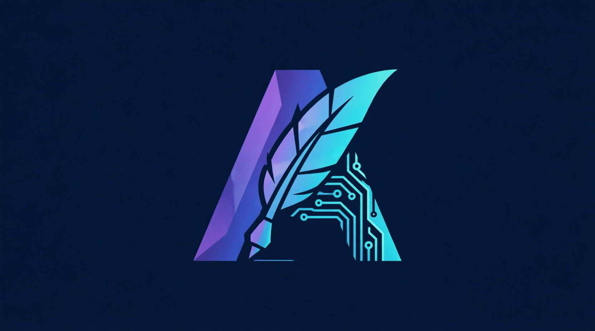

Урок 5: Регуляризация глубоких моделей
ML-инженер • Архитектура нейросетей с нуля
Современные нейросети содержат миллиарды параметров, что делает их крайне склонными к переобучению (overfitting) — ситуации, когда сеть просто зазубривает тренировочный датасет. Регуляризация — это набор математических методов, накладывающих ограничения на сложность модели, чтобы заставить её находить общие закономерности.
Идея штрафования весов заключается в добавлении нормы матрицы параметров к основной функции потерь:
import torch
import torch.nn as nn
model = nn.Linear(10, 2)
criterion = nn.MSELoss()
optimizer = torch.optim.SGD(model.parameters(), lr=0.01)
# Имитация прохода
inputs = torch.randn(5, 10)
targets = torch.randn(5, 2)
outputs = model(inputs)
base_loss = criterion(outputs, targets)
# Ручное добавление L1 регуляризации
l1_lambda = 0.001
l1_norm = sum(p.abs().sum() for p in model.parameters())
total_loss = base_loss + l1_lambda * l1_norm
# Примечание по L2: В PyTorch L2 встроена прямо в оптимизатор как weight_decay
# optimizer = torch.optim.SGD(model.parameters(), lr=0.01, weight_decay=0.001)Dropout случайным образом «выключает» (зануляет) заданную долю нейронов (например, 50%) на каждом шаге обучения. Это заставляет сеть не полагаться на конкретные синапсы, а строить устойчивые распределенные представления данных.
(1 - p), где p — вероятность сброса. Это нужно, чтобы на этапе инференса (когда включены все нейроны) масштаб сигналов не менялся, и нам не приходилось пересчитывать веса.
# Демонстрация логики Dropout
dropout_layer = nn.Dropout(p=0.5)
example_tensor = torch.ones(1, 10) # Тензор из единиц
# Режим обучения (Training) — элементы зануляются и масштабируются (1 / (1-0.5) = 2)
dropout_layer.train()
print("В режиме тренировки:\n", dropout_layer(example_tensor))
# Режим инференса/тестирования (Evaluation) — все нейроны активны, масштаб 1:1
dropout_layer.eval()
print("В режиме инференса:\n", dropout_layer(example_tensor))Если вы пишете архитектуру с нуля, критически важно управлять состоянием слоев регуляризации (Dropout, BatchNormalization) через вызовы переключателей model.train() и model.eval() перед циклами прогона данных.
class CustomNetwork(nn.Module):
def __init__(self):
super().__init__()
self.fc = nn.Linear(128, 64)
self.drop = nn.Dropout(0.3)
def forward(self, x):
# На этапе eval() слой self.drop автоматически превратится в identity-операцию
# (пропустит x без изменений)
return self.drop(torch.relu(self.fc(x)))Реализуйте свой собственный слой CustomDropout на чистом PyTorch (не используя встроенный nn.Dropout). Ваша реализация должна принимать параметр p, генерировать маску из распределения Бернулли через torch.rand_like, корректно масштабировать тензор при обучении и полностью отключаться, если слой переведен в режим тестирования (используйте флаг self.training, наследуемый от nn.Module).
import torch
import torch.nn as nn
class CustomDropout(nn.Module):
def __init__(self, p=0.5):
super().__init__()
if p < 0 or p > 1:
raise ValueError("p must be between 0 and 1")
self.p = p
def forward(self, x):
# 1. Проверка режима обучения (self.training)
# 2. Если p > 0 и мы в обучении:
# - Создайте маску (torch.rand_like(x) > self.p)
# - Масштабируйте результат (делением на 1-p)
# - Верните x * mask * scale
# 3. Иначе верните x без изменений
pass
# --- Тестирование ---
if __name__ == "__main__":
x = torch.ones(1, 10)
# Режим обучения
drop = CustomDropout(p=0.5)
drop.train()
print("Train:", drop(x))
# Должны быть нули и значения около 2.0
# Режим инференса
drop.eval()
print("Eval:", drop(x))
# Должны быть все единицы (1.0)import torch
import torch.nn as nn
class CustomDropout(nn.Module):
def __init__(self, p=0.5):
super().__init__()
if p < 0 or p > 1:
raise ValueError("p must be between 0 and 1")
self.p = p
def forward(self, x):
# self.training - это встроенный флаг nn.Module
# Он становится True при model.train() и False при model.eval()
if self.training and self.p > 0:
# Бернулли маска: True (1) с вероятностью (1-p), False (0) с вероятностью p
mask = torch.rand_like(x) > self.p
# Инвертированное масштабирование: 1 / (1-p)
# Если p=0.5, делим на 0.5, то есть умножаем на 2
return x * mask / (1 - self.p)
return x
if __name__ == "__main__":
x = torch.ones(1, 10)
drop = CustomDropout(p=0.5)
drop.train()
print("Train:", drop(x))
drop.eval()
print("Eval:", drop(x))При обучении мы случайно удаляем часть нейронов. Если бы мы просто зануляли их, то средняя сумма сигналов на выходе слоя уменьшилась бы в (1-p) раз.
На этапе инференса (тестирования) Dropout выключается, и работают все нейроны. Если мы не скомпенсируем удаление нейронов во время обучения, то на тесте нейросеть получит слишком сильный сигнал (в 1/(1-p) раз больше).
1 / (1 - p) прямо во время обучения.
p = 0.5 (выкидываем 50%).1 / 0.5 = 2..training (True/False). Методы model.train() и model.eval() рекурсивно устанавливают этот флаг для всех вложенных слоев.
Приложение бесплатное. Было и останется.
Если проект помог вам или вашим близким — можете поддержать разработку добровольным переводом.
❤️ Спасибо за поддержку!
Перейти в каталог
